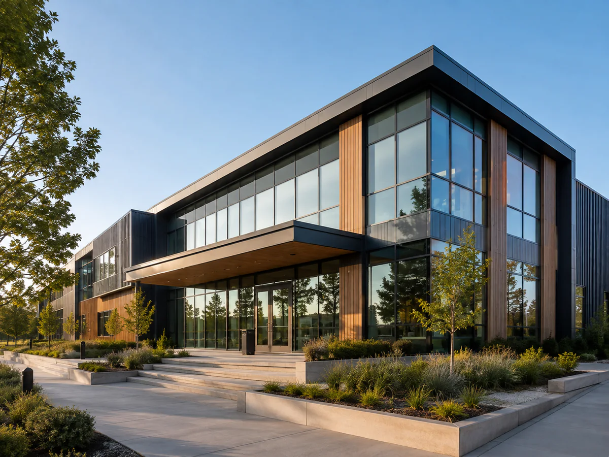

OrganisationsIn-houseworkshops
Tailored half-day resilience training for teams and organisations.
View pageStrength in Aotearoa
Practical resilience training and resources for organisations, teams, and the people who support others.
Hoea tō Waka

OrganisationsTailored half-day resilience training for teams and organisations.
View pageFocused one-to-one support for leaders or team members who need practical direction.
View pageTraining for people supporting clients, whānau, and communities in complex settings.
View pageSo incredibly valuable and I can see how I can immediately apply it in my work with rangatahi.
Ready when you are
Tell Anna what your team is navigating. Together you can shape a practical starting point.
Start a conversation